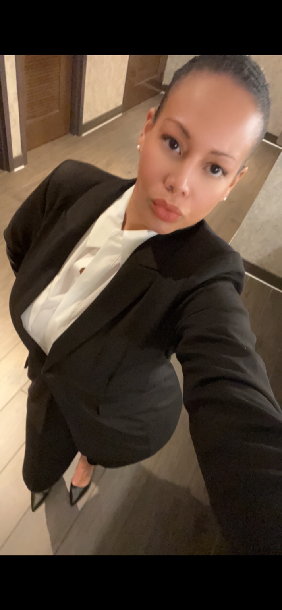
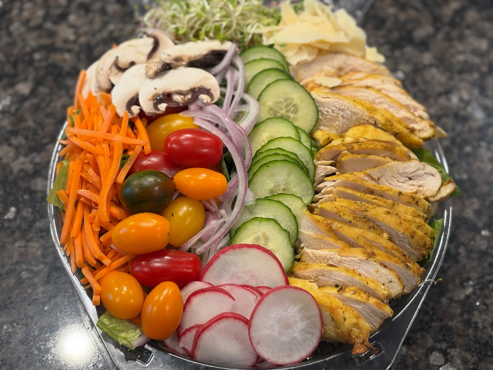
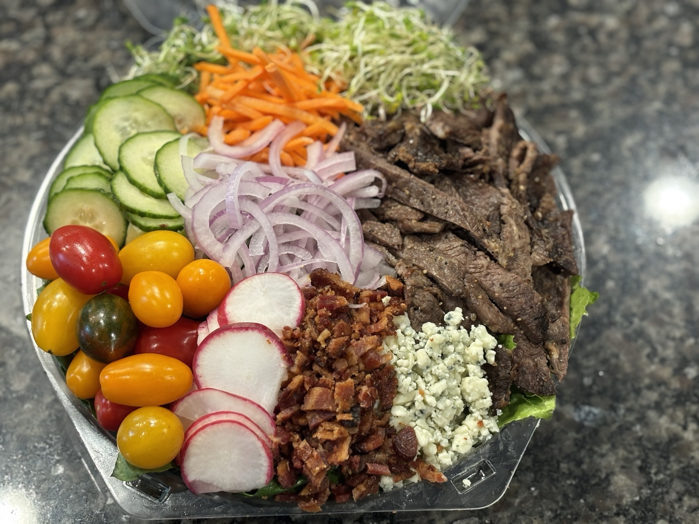
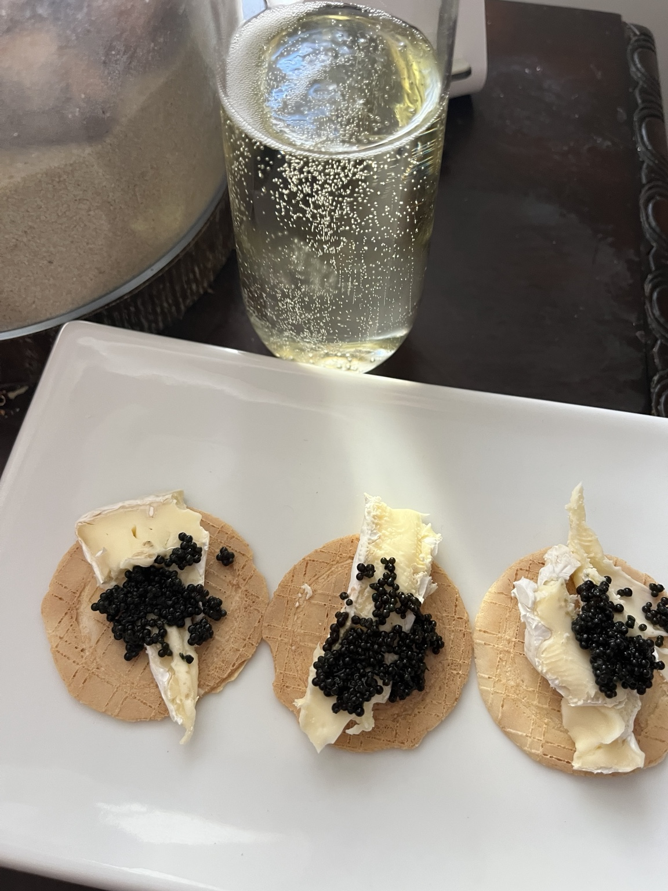

Ocean & Seafood
Ocean & Seafood
Lake Norman · Charlotte · Private Events
Luxury catering.Extraordinary hospitality.
Bespoke menus, pure seasonal ingredients and polished service—crafted around your occasion.
Ocean & Seafood Farm & Garden
Farm & Garden Luxury Canapés
Luxury Canapés
Meet Chef Nic
Creativity. Intention.Unforgettable experiences.
Chef Nic specializes in refined seafood and creates bespoke culinary experiences inspired by pristine coastal ingredients, vibrant produce and the finest seasonal offerings. Every menu is thoughtfully composed to feel personal, polished and unforgettable.
From intimate private dinners to grand celebrations, every detail is approached with care, class and a commitment to refined hospitality.
Founder & Culinary CreativeOur Philosophy
The Cape V StandardQuality in every detail.
✧Organic & SeasonalFresh ingredients selected at their peak.
⌂Locally SourcedTrusted farms, purveyors and artisans.
◌Handcrafted MenusDesigned around your occasion and guests.
♢Refined PresentationBeautifully plated and thoughtfully served.
◇Elevated HospitalityWarm, impeccable service from start to finish.
Signature Experiences
Private Chef
Intimate dining in the comfort of your home.
Luxury Catering
Elegant service for celebrations of every scale.
Weddings
Beautifully curated menus for your perfect day.
Corporate Events
Professional, polished and unforgettable.
Grazing Tables
Artful displays designed to impress.
Meal Prep
Chef-prepared meals for your lifestyle.
Curated Gallery
Fresh. Organic. Seasonal.






What Our Clients Say
Elegant service. Memorable moments.
★★★★★“Every detail was flawless—from presentation to flavor. Our guests are still talking about the experience.”
Private Event Client
★★★★★“Professional, elegant and beautifully executed from beginning to end.”
Lake Norman Client
★★★★★“The food was exceptional and the hospitality felt truly five-star.”
Charlotte Client
Let’s Create Something Extraordinary
Tell us about your occasion.
Share your event details and we’ll begin shaping a personalized Cape V experience.